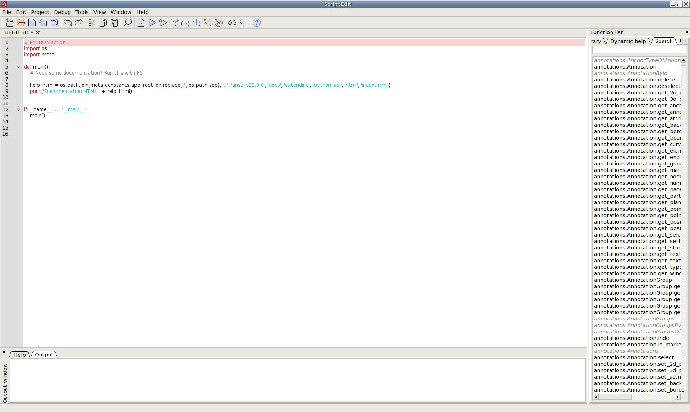

10 Minutes to META API#
This is a short introduction to the META API, geared mainly for new users. If you want to dive into all the details, you can read the complete Interacting with META.
Script Editor#
Whether you are an experienced developer or a beginner in the field of programming, the Script Editor is going to be a good friend of yours, for at least your first couple of experiments with the META API. Although it’s mainly designed as a playground for simple python scripts, the Script Editor is a complete editing environment attached directly to the META core functionality, while offering very useful search and documentation help features. In order to access the Script Editor from META, press the menu button Tools –> Script Editor. The Script Editor will open and you can either start editing a new file or open an already existing one, by using the respective options from the File menu.
A new file in the Script Editor will look as the following:

The main part of the window is the editor, where specific python and META API keywords are highlighted, while on the right-hand side lies the Search toolbar. By double clicking on a selected function from the list, the respective help text appears at the bottom of the screen, in the Help window, or by right clicking, the function is written on the active file at the current cursor position. Additionaly, pressing F1 while the cursor is on a function, its help will appear in the Help window.
The help gives information about the function, the arguments needed as well as one or more examples.
When you press the Run button or the F5 key, the code will be executed and all the appropriate messages will appear on the Output window.
Note
Greyed out functions found in Script Editor are deprecated since v20.1.0, but they are totally functional.
You can read more info on how to use the Script Editor.
Execution of scripts#
Scripts can be executed directly from the Script Editor, from File –> Open Session/Script menu of META or through the META commands read session, script execute or toolbar execute. Note that when calling a script through the read session command, the first line of the script should be exactly # PYTHON script. This allows META to understand tha the file is a Python script.
Additionally, scripts can be inserted within a session file in between the lines //#!python and //#!EOF.
Modules#
The META API consists of a series of functions and classes that interact directly with the META interface. These are divided in distinct modules, separating the different functionalities of the respective components contained in each one. Every module needs to be imported prior to using its functions.
The materials module can be simply accessed as shown in the following example:
# PYTHON script
import meta
from meta import materials
Note
All available modules are listed under the Library tab in Script Editor as well as in the META API Reference Manual.
Objects and functions#
The META API is mainly structured by objects which have methods and attributes instead of functions. Firstly, the required module is imported. Then, through a function or the object’s constructor, objects corresponding to entities in META are created. These objects have methods and attributes to apply actions, set settings, collect other entities or give some information.
In the example below, assuming that an annotation with id 1 already exists in META, an annotation object is created by its constructor meta.annotations.Annotation.
# PYTHON script
import meta
from meta import annotations
def main():
annotation_id = 1
page_id = 0
a = annotations.Annotation(annotation_id, page_id)
if a:
print(a.text, a.visible, a.selected)
if __name__ == '__main__':
main()
While, in the next example the model objects are returned by the function meta.utils.get_models().
# PYTHON script
import meta
from meta import utils
def main():
models = utils.get_models('all')
print(models)
if __name__ == '__main__':
main()
Note
All objects related to META entities are directly linked to them. For example an Annotation object is linked with the actual Annotation in META. If it’s text changes, the change will instantly be available in the python object. If the annotation is deleted, the python object will become invalid.
Attributes and methods#
Each object has attributes which can be directly used to collect information such as their name, type or properties. Through their methods, other entities can be collected, information can be retrieved, settings or options can be applied and actions can be performed. Methods that collect entites or information usually start by get_, methods that apply options start by set_.
For example some attributes of the meta.windows.Window object are:
.name : Returns the name of the window.
.active : Returns 1 if the window is active, else 0 if not active.
.height : Returns the height of the window.
And some methods of the meta.plot2d.Curve object which are:
.get_points_y_values() : Returns a list with the Y values.
.set_color() : Sets the curve’s color
.hide() : Hides the curve.
Read models and results#
Although, models and results can be read by META commands, these do not return the model or resultset objects. It is recommended to use the appropriate functions instead, meta.models.LoadModel() for models and meta.results.LoadDeformations() , meta.results.LoadScalar() , meta.results.LoadVector() for results.
Similarly, curves can be loaded by functions like meta.plot2d.LoadCurvesDyna(). A separate function exists in this case for each type of file.
# PYTHON script
import meta
from meta import models, results
def main():
window_name = 'MetaPost'
model_filename = '/home/examples/AbaqusEx8.inp'
results_filename = '/home/examples/Abaqus.odb'
deck = 'ABAQUS'
states = 'all'
data = 'Stress components,Von Mises,Inner and Outer,Centroid'
m = models.LoadModel(window_name, model_filename, deck)
if m:
model_id = m.id
new_resultsets = results.LoadScalar(model_id, results_filename, deck, states, data)
if __name__ == '__main__':
main()
Note
There are special functions to scan for the available results in file which can be used as arguments in the Load functions e.g. meta.results.DeformationTypes(), meta.results.DeformationTypesList(), meta.results.ScalarTypesAll() etc.
Collect entities#
Entities are collected from various objects through get methods based on a Parent-Child structure. From a model, parts can be collected. From an element, deformations. From a window, annotations etc… Main entities like models, pages and planes are collected directly, and not from a parent object, through functions like utils._get_xxx().
Similar functionalities are grouped under one method and handled with named arguments which act like filters. For example the get_parts() method in the code example below can be used to collect only visible parts or parts that have a specific type.
# PYTHON script
import os
import meta
from meta import utils, models, constants
def main():
models = utils.get_models('all')
for m in models:
#Returns all parts of the model
all_parts = m.get_parts('all')
#Returns visible parts only
visible_parts = m.get_parts('visible')
#Returns a part by id
my_part = m.get_parts('all', part_id = 42)
#Returns parts by search in their name
rail_parts = m.get_parts('with_name', name='*RAIL*')
#Returns only parts of type PSHELL
pshell_parts = m.get_parts('all', part_type = constants.PSHELL)
if __name__ == '__main__':
main()
Note
All keywords related to solver dependent entities like parts, element types etc which can be used through the constants module, can be found under the Functions List in Script Editor in Library –> betameta_structs –>betameta_structs.META_KEYWORDS.
Get states, labels and result values#
Getting states and labels information is based on the meta.results.Result() resultset object. This object refers to a specific state and label. It is required as an argument in multiple methods in order to retrieve state ids, cycles, deformation, scalar, vector values etc.
Getting deformation, centroid, nodal, corner scalar or centroid and nodal vector is realized by methods available on the entity from which we need to collect the data. e.g. meta.nodes.Node.get_nodal_scalar(). These methods do not directly return values but they return objects or lists of objects with more information than the value.
# PYTHON script
import os
import meta
from meta import windows, models, utils
def main():
#Get window
w = windows.Window('MetaPost', page_id = 0)
#Get active model
m = utils.get_models('active')[0]
#Get current resultset
resultset = m.get_current_resultset()
#Loop on visible elements and get their centroid and corner
visible_elements = m.get_elements('visible', window = w)
for e in visible_elements:
centroid = e.get_centroid_scalar(resultset, 'all')
if centroid:
print(centroid.element_id, centroid.value)
corner = e.get_corner_scalar(resultset, 'all')
for corn in corner:
print(corn.value) # Corner scalar value
print(corn.element_id, corn.second_id, corn.type) # Id, second id and type of the element
print(corn.corner) # Id of the node - corner with this corner scalar value for shell and solid elements
if __name__ == '__main__':
main()
Note
Avoid collecting results in a for loop for many entities, e.g. by meta.elements.Element.get_centroid_scalar(). For better performance use the method in a model, part or group object instead.
import meta
from meta import parts
from meta import constants
from meta import models
def main():
m = models.Model(0)
part = parts.Part(id=2, type=constants.PSOLID, model_id=m.id)
res = m.get_current_resultset()
part_centroid = part.get_centroid_scalar(res, 'all') #Use 'min' or 'max' instead of 'all' to get only the min or max of the part.
for centroid in part_centroid:
print(centroid.value, centroid.element_id, centroid.second_id, centroid.type)
if __name__ == '__main__':
main()
Call META commands within a script#
Even if the majority of functionality can be covered through scripting, the use of META commands is frequent.
All META commands can be called through the meta.utils.MetaCommand() function by passing the command as a string argument.
Single quotes are preferred to avoid conflict with double quotes of META commands.
To avoid repetition of the same command for multiple entities, it is possible to convert a list of ids to a string representing a range by meta.utils.ListToRange() function.
In the following example, the elements connected to a node are collected and identified.
# PYTHON script
import meta
from meta import models, nodes, utils
def main():
m = models.Model(0)
n = nodes.Node(id=161, model_id=m.id)
elems = n.get_elements()
utils.MetaCommand('identify reset')
element_ids = []
for e in elems:
element_ids.append(e.id)
elements_ids_range = utils.ListToRange(element_ids)
utils.MetaCommand('identify element %s' %elements_ids_range)
if __name__ == '__main__':
main()
Variables and Built-in Functions#
META variables are frequently used to store information. They can also be used to exhange data between different runs of sessions, scripts and user toolbars. Variables can be collected by meta.utils.MetaGetVariable() function. They can be created by meta.utils.MetaSetVariable() function.
# PYTHON script
import meta
from meta import utils
def main():
my_value = 0.42
utils.MetaSetVariable('my_var_name', str(my_value))
collected_value = utils.MetaGetVariable('my_var_name')
print(collected_value)
if __name__ == '__main__':
main()
Note
All META variable values are returned as strings and need to be converted to the desired type. Similarly, only strings can be set as META variables.
Built-in functions, which are expressions to collect data and found in many tools of META, can also be evaluated within a script. In some cases, their use is preferable as it may allow to avoid massive collections and loops between entities and their attributes.
# PYTHON script
import meta
from meta import utils
def main():
#Get the Y value of curve 1 of window 1 for X equal to 1.25
ret = utils.EvalBuiltInFunction('`w[Window1]c1.y[x=1.25]`')
if ret:
value = float(ret)
print(value)
if __name__ == '__main__':
main()
Note
As with META variables, results from Built-in functions are also returned as strings.